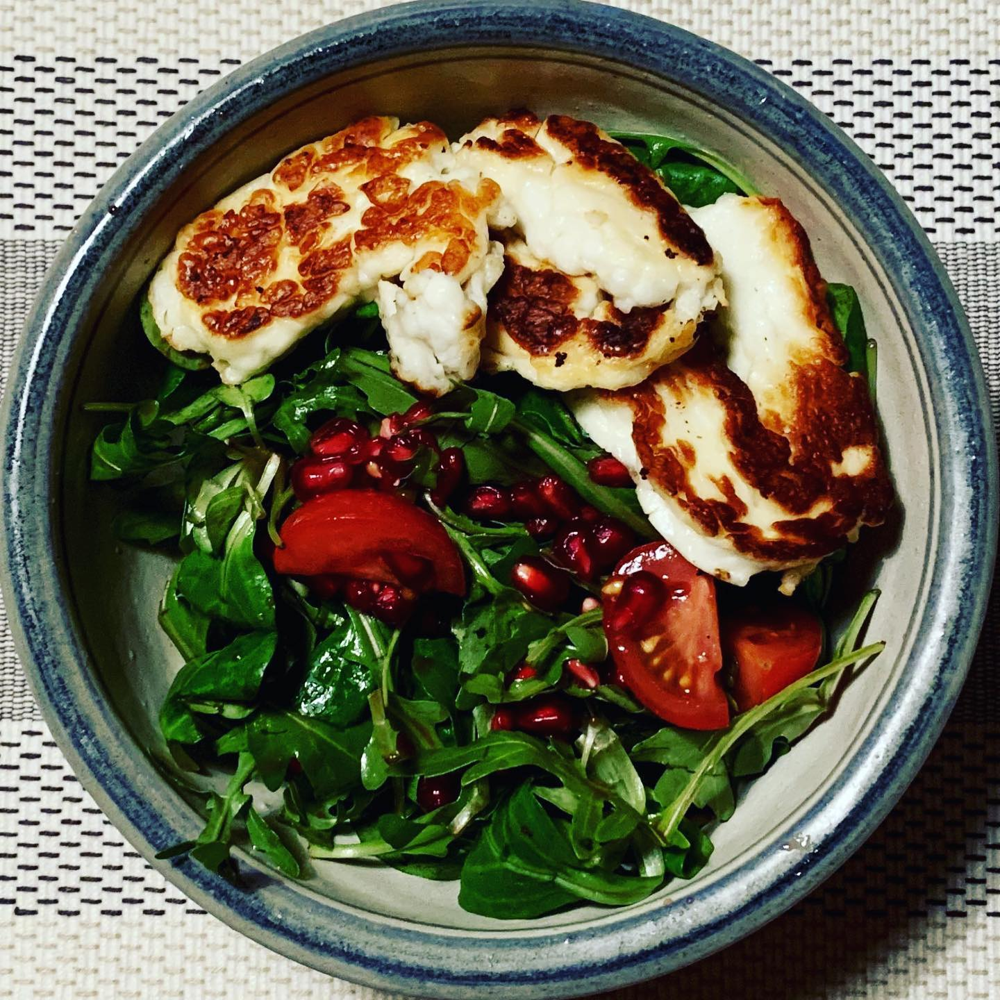

Vegetariánsky šalát podľa @vegenevege.cz — Normy Jedál
🥗🥰Svěží salát s granátovým jablkem
a sýrem halloumi / Refreshing salad with pomerangate and halloumi cheese (VEGETARIAN)
https://www.vegenevege.cz/recept/svezi-salat-s-granatovym-jablkem-a-syrem-halloumi-vegetariansky/
Ingredients:
200 g rocket salad
200 g corn salad
2 pomerangates
150 g cherry tomatoes
200 g halloumi cheese (use tofu for vegan version)
Olive oil
Salt
Pepper
Recipe:
Mix salads in a bowl.
Add chopped cherry tomatoes and pomerangate seeds.
Season with salt and pepper.
Drizzle with olive oil.
Slice halloumi cheese and roast it in a pan (without oil). Serve salad with roasted halloumi cheese.
Enjoy Your meal😋🤗 #vegenevege #vegetarian #vegetarianrecipes #vegetarianideas #vegetables #fresh #salad #halloumicheese #halloumi #pomegranate #pomegranateseeds #cherrytomatoes #rocketsalad #cornsalad #healthyfood #vegetarianskysalat #salat #granatovejablko #halloumisyr #vegetarianskerecepty